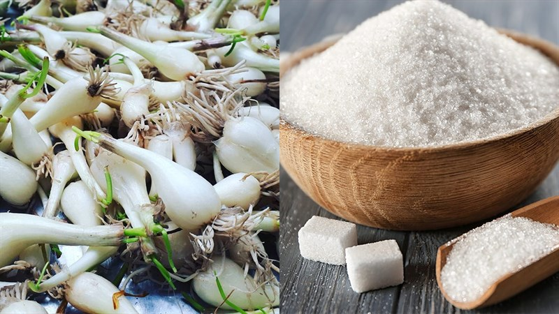
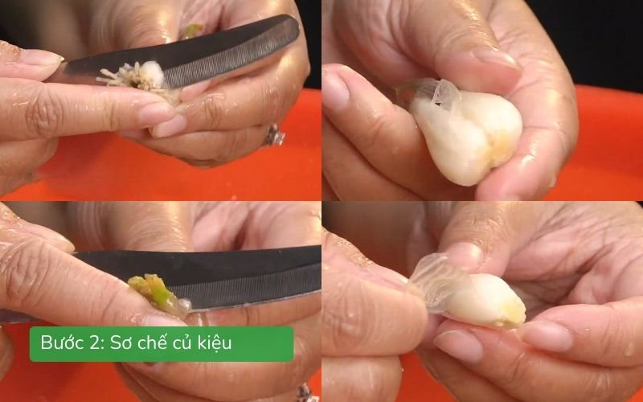
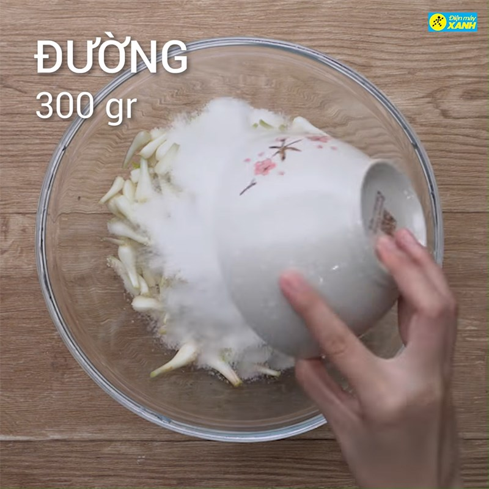
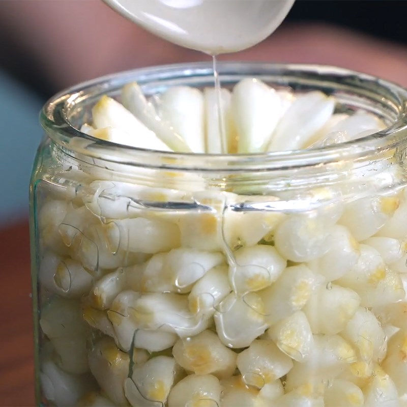
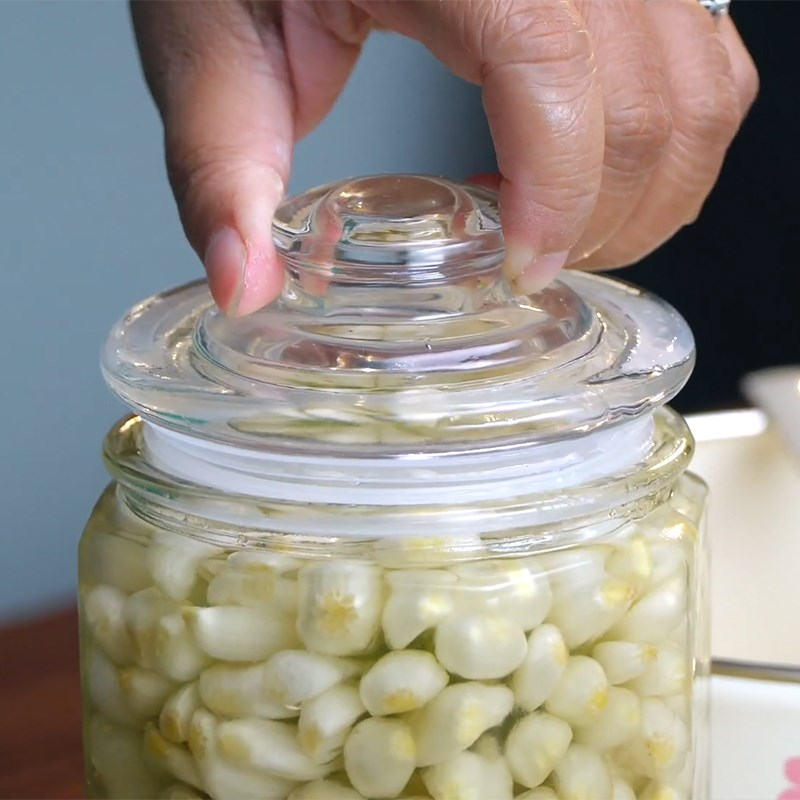
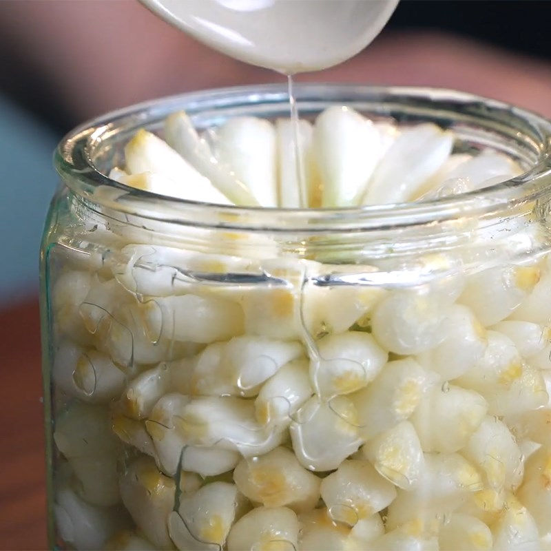
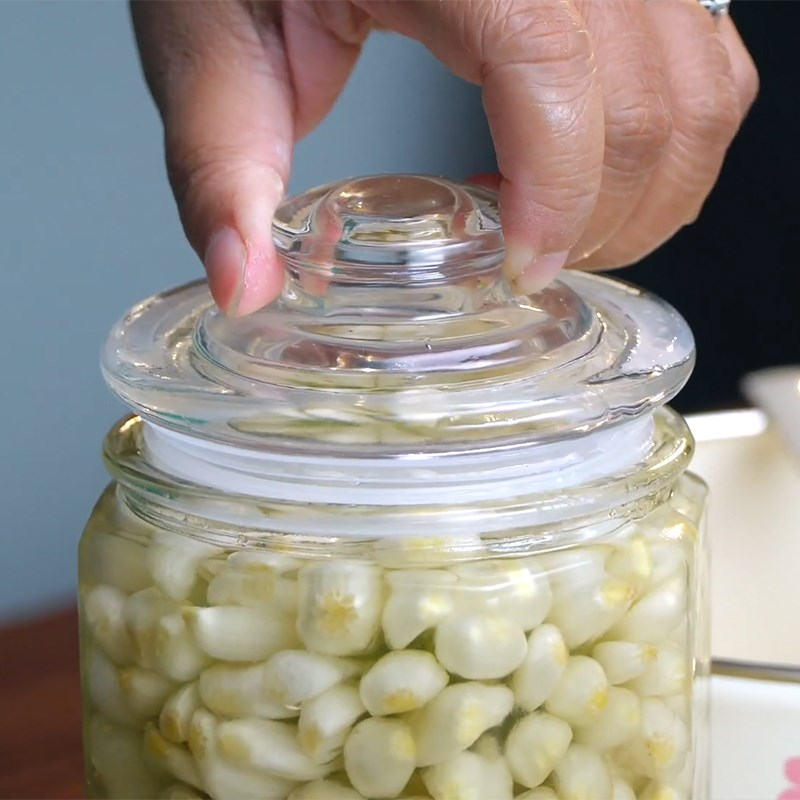

- Củ kiệu tươi: 1 kg
- Muối hạt: 2–3 muỗng canh
- Đường trắng: 300–400 g
- Giấm gạo hoặc giấm nuôi: 300 ml
- Nước lọc: 300 ml
- Cắt bỏ rễ và phần lá già, giữ lại phần củ trắng.
- Ngâm củ kiệu trong nước muối loãng khoảng 6–8 giờ (hoặc qua đêm) để giảm mùi hăng.
- Vớt ra, rửa lại nhiều lần với nước sạch, để ráo.
- Phơi củ kiệu ngoài nắng nhẹ 1 ngày cho hơi héo, giúp củ kiệu giòn và dễ thấm gia vị.
- Cho củ kiệu vào tô hoặc hũ lớn, rải đều đường lên trên.
- Trộn nhẹ, để yên khoảng 2–3 ngày cho đường tan hoàn toàn và thấm vào củ kiệu.
- Khi thấy củ kiệu ra nước, chuyển sang bước ngâm giấm.
- Đun hỗn hợp gồm giấm, nước và phần nước đường vừa tiết ra từ củ kiệu.
- Khi nước vừa sôi, tắt bếp, để nguội hoàn toàn.

- Xếp củ kiệu vào hũ thủy tinh sạch, đổ nước ngâm đã nguội ngập mặt củ kiệu.
- Đậy kín nắp, để nơi thoáng mát từ 5–7 ngày là dùng được.
 



- Củ kiệu đạt yêu cầu có màu trắng trong, vị chua ngọt hài hòa, giòn và thơm nhẹ.
- Bảo quản trong ngăn mát tủ lạnh để giữ độ giòn và dùng được lâu.

12A4_N1_D2
Ngày cập nhật nội dung gần nhất: 19/01/2026
Tham khảo từ các nguồn như: Chatgpt.com, amthucvn.com, google.com, giatrinhbakery.com.vn, ...